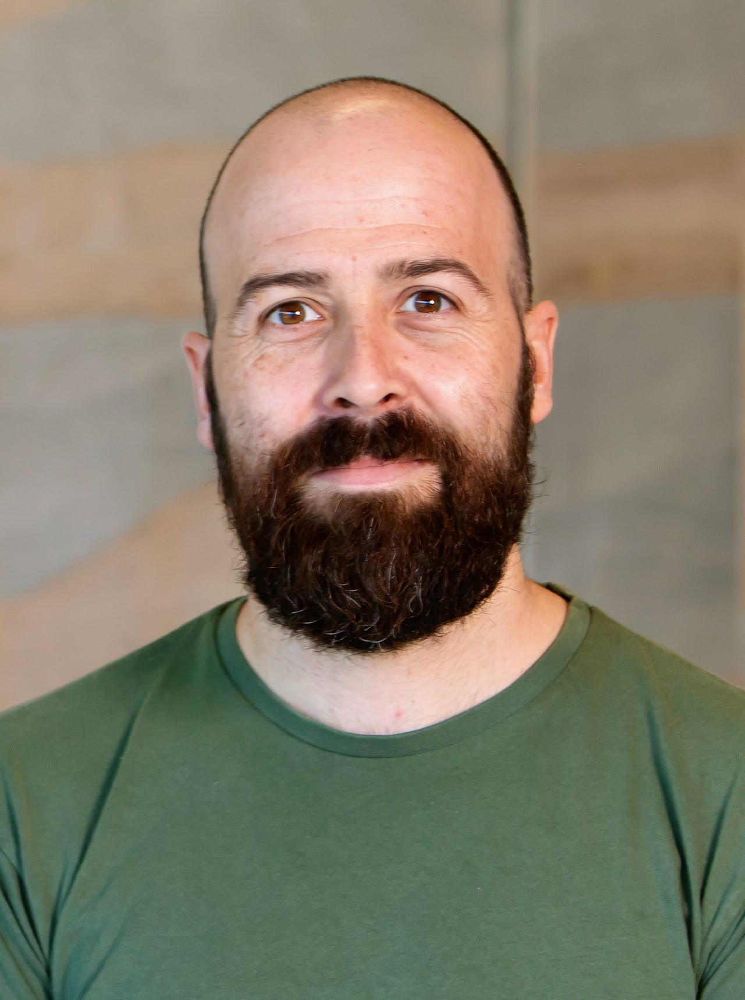

About the Project
RecAIqual is a two-year research project that asks how artificial intelligence and machine learning can unlock the untapped potential of archived qualitative data. Research data repositories collectively host hundreds of qualitative collections — interview and focus-group transcripts, audio and video recordings, field notes, and imagery. Yet despite the considerable effort invested by researchers, participants, and funders in producing this material, the vast majority of it is used only once and then set aside. RecAIqual treats this single-use habit as an avoidable loss of scientific value, and sets out to change it.
The project examines how large language models and multimodal machine learning can complement established qualitative methodologies to make secondary qualitative data analysis (SQDA) more accessible and more powerful across the social sciences and humanities. Crucially, RecAIqual does not treat AI as a replacement for human-centred qualitative inquiry. Instead, it asks how computational tools can assist researchers in identifying patterns at scale, analysing non-verbal communication, and integrating data across studies — while preserving the contextual sensitivity and interpretive depth that qualitative research demands.
Research Questions
RecAIqual is guided by two core questions:
- How can machine learning assist in analysing existing, archived qualitative data to complement current approaches to inference?
- How can established and early-career researchers, end users, and practitioners benefit from combining machine learning and qualitative inference?
Research Design
The project is organised around three work packages:
- WP1 — Re-analysis: Applying multimodal machine learning to a publicly archived collection of interviews with climate activists, using topic modelling, supervised classification, and multimodal emotion analysis to revisit and enhance findings from the original study.
- WP2 — Re-cycling: Using the same archived data to ask new research questions, examining how emotional cues shape activist messaging, and applying large language models to over 900 interview transcripts from nine UK Data Archive collections to investigate how informal institutions shape community resilience in Africa.
- WP3 — Impact: Working directly with practitioners and researchers through co-design and outreach workshops held in the UK and Nairobi, and producing two white papers — a practical how-to guide on AI-assisted SQDA, and a reflective piece on how AI is reshaping qualitative research design.
Principal Investigators

Dr Florian G. Kern
Project Lead (PI)
Reader, Department of Government
University of Essex
Florian's research focuses on governance in Africa, applied qualitative methods, secondary qualitative data analysis, and research transparency. He is Director of Impact in the Department of Government at Essex and sits on the research committee of the British Institute in Eastern Africa.
fkern@essex.ac.ukDr Christian Arnold
Project Co-Lead (Co-PI)
Associate Professor in Government and AI
University of Birmingham
Christian's work bridges machine learning and qualitative inquiry, with recent projects applying large language models and multimodal analysis to parliamentary debate, political negotiations, and electoral data. He is a member of the University of Birmingham's Institute for Data and AI and its Centre for AI in Government.
c.arnold@bham.ac.uk